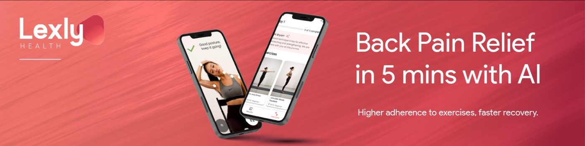
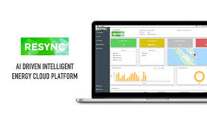
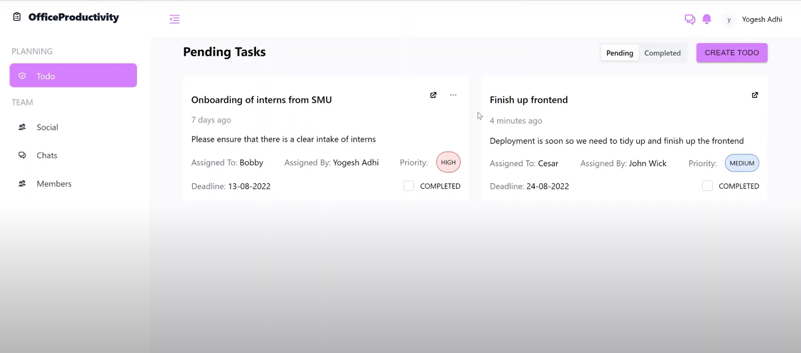
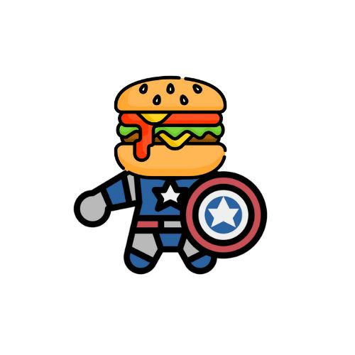
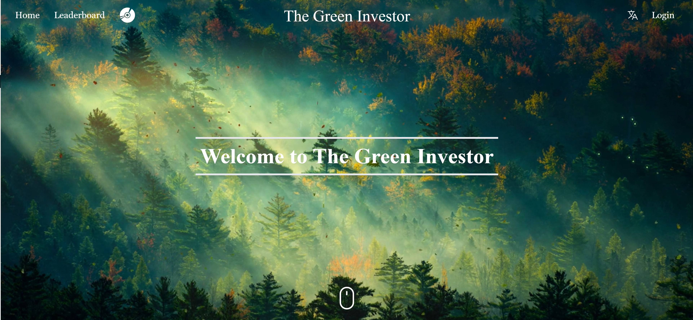
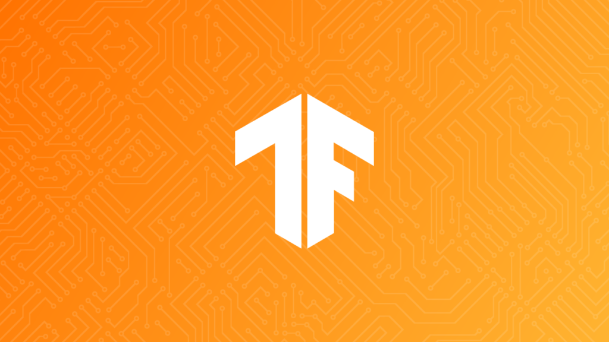

As a software engineering intern at Lexly, I was involved in developing and improving the front-end interface using React.js
with an expectation to cut time spent on finding healthcare experts by 40%.
I had to communicate with back-end developers to ensure a smooth integration of front-end as well.
New interactive and responsive features had to be implemented on the platform in order to improve the user experience.

Resync is a AI driven Intelligent Energy Cloud Solution for Smart City and Distributed Energy Assets.
As a Software Engineer Intern, I was involved in the refactoring of the front-end code of the
smart building project and worked on a tight schedule with deployment required in 3 months.
I also helped to redesign the application using Figma to ensure consistency and an User Interface that was understandable and user-friendly for over 50 clients.
Implemented multiple interactive components and pages and fetched data from the back-end in the front-end codebase using React.js,
Next.js and Typescript. I also tested the front-end using Cypress.io to ensure that the user stories were satisfied.

OfficeProductivity was a personal project and is a one-stop communication and task-allocation platform for office workers.
I built the user interface using React stateful components to allow users to effortlessly communicate with their fellow colleagues as well as
to update them about their life stories.
The Backend was set up in MongoDB atlas using mongoose schema. I connected the front-end application to the back-end using Axios and Express.js
Additionally, I implemented real-time messaging using SocketIO.

FoodHeroes was built during NUS Lifehack hackathon and it serves as a platform that connects restaurants with volunteers who then help to transport excess food at the end of the day. Food wastage is currently a big issue where restaurants and F&B outlets tend to
make excess so we were inspired to tackle this
problem. Therefore, we implemented a platform where restaurants can list their excess food items and users are able to scan through and pick the items that
they would like to deliver. The front-end UI was built using React.js and the data received by users was stored in a Firebase storage which was constantly refreshed and
displayed on the front-end.

ServiceFinder was developed during a hackathon held by Goldman Sachs. We implemented a platform that helps new companies
that are planning to enter the banking industry find services provided by Goldman Sachs easily. We designed an interactive frontend design
using React.js and the backend was set up using Spring Boot. The database that we decided to use was SQL.
I was involved in the development of the frontend, integration of the frontend with the backend as well
as the development of API involving relational schemas in the backend to post data inputed by the users into our SQL database.

The Green Investor is a turn-based business simulation trivia game that will require you
to balance your company's profitability and sustainability.
As part of the project theme, 'Climate Change', The Green Investor aims to educate potential retail investors about the opportunities and challenges of sustainable investing. To prevent further irreversible impacts on the planet, businesses must take more initiative in preventing climate change. Hence, it is crucial that companies adapt and evolve their business into a sustainable model.They will be tasked to make decisions which will affect their in game statistics which includes money, sustainability and morale. The backend of this application was built on spring boot and the frontend was built on React. Various microservices such as weekly email notifications, translation and search engine optimization was implemented. Various security implementations such as JWT token was also implemented within this application.
I embarked on a project to learn the C# Language and .Net framework. Built an API that consisted of movie and actor entities that were linked by a one to many relationship. CRUD methods were implemented along with role-based authoratization and authentication. The database used was mongoDB and was run locally on a docker image. Health checks were also included to ensure the API is running smoothly and will indicate if it goes down. Additionally, I included a few unit tests using the .Net libraries to ensure that the controller is performing its actions correctly and providing the correct output.

I embarked on a project to learn Tensorflow as I have an avid interest in Artifical Intelligence and Tensorflow is one of the most popular frameworks used in today's industry. This is a simple sentiment analysis project where it checks if a review is a positive or a negative review. Data for movie reviews was retrieved from an online source and was used to train and test the data. Pandas and Numpy Libraries were used to study the data as well. Preprocessing by cleaning the data and removing unnecessary componenents within the reviews were done to increase the accuracy of the ML model. The algorithm that I decided to use to train the model was the LinearSVC algorithm.